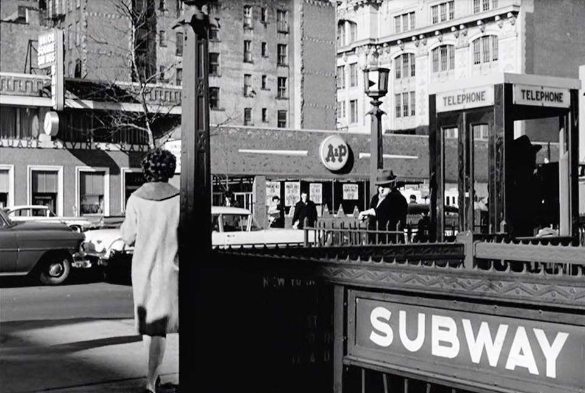
L Train station, 1st Ave and 14th Street, 1962
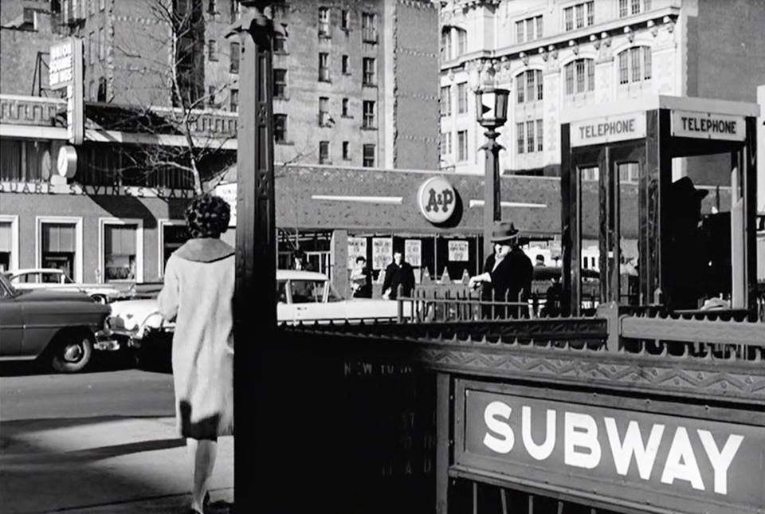
L Train station, 1st Ave and 14th Street, 1962

Hats

Washington Heights, 1978
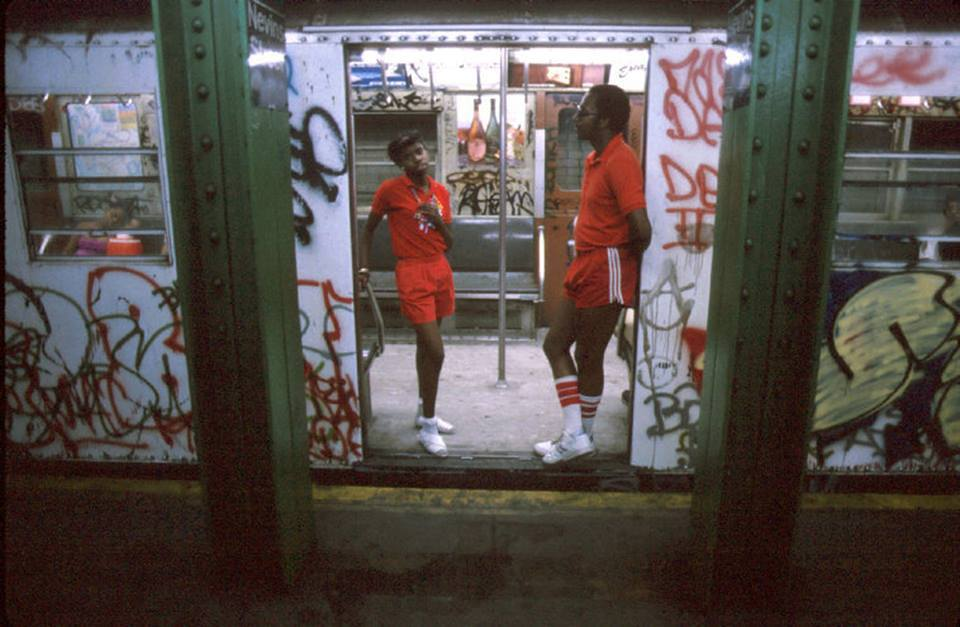
Stand clear of the closing doors.

Macy’s Thanksgiving, 1972
Elliott Erwitt, USA. New York City. 1988. Macy’s Thanksgiving Day Parade.

A high school graduation in 1979, near Carnegie Hall
No. I used to, long ago.
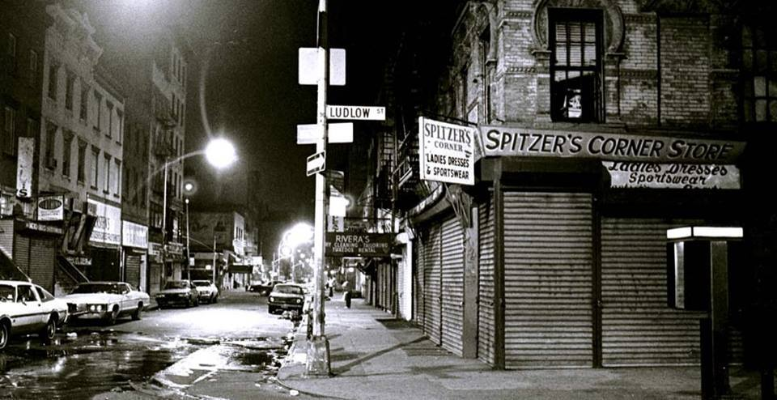
Ludlow and Rivington, 1986

The QE2 parked near the WTC

Cops outside Port Authority, 1978
I’m not sure where it is, but I’m almost positive it’s midtown Manhattan. I think the sign actually reads “Queensboro - 8th Ave”, as seen on this retro sign they made for Men In Black: http://www.nydailynews.com/new-york/retro-subway-signs-dot-brooklyn-stations-men-black-iii-filming-article-1.147020
What happens in your pocket stays in your pocket…

The Pan Am Building looms over Grand Central Station in an uptown view from 40th Street. My somewhat mediocre photo circa 1989.

Room with a view. Chelsea, 1970.
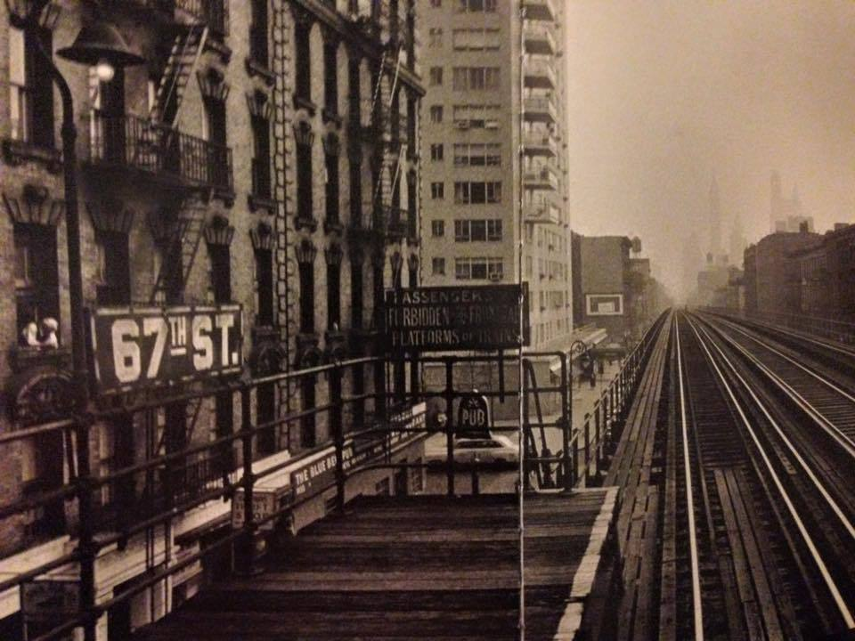
The 67th Street Station of the Third Avenue El–a 1950s photo but unclear (at least to me) if it was taken after the last train ran on this line (which was in May 1955) or perhaps just when no train happened to be in sight on the tracks. Photo by William Klein.
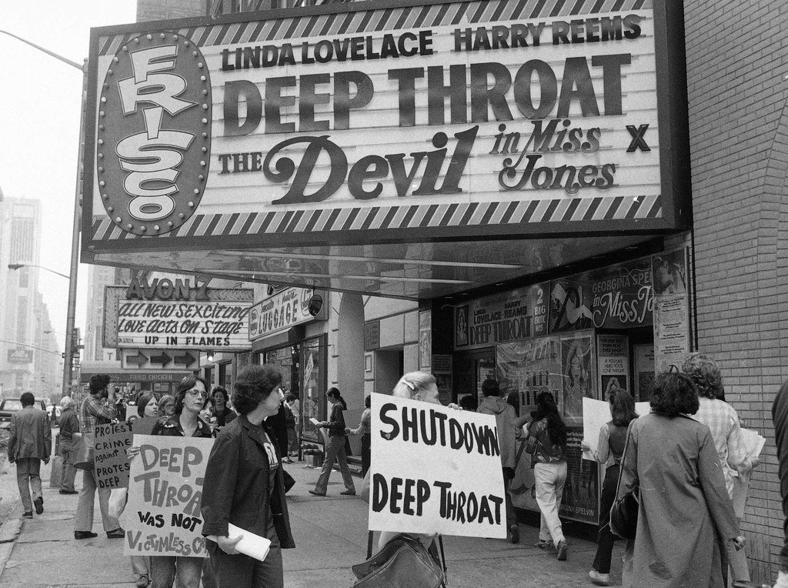
West side of 7th Avenue between 48th and 49th, ca. 1979

New York City, 1961 © Constantine Manos
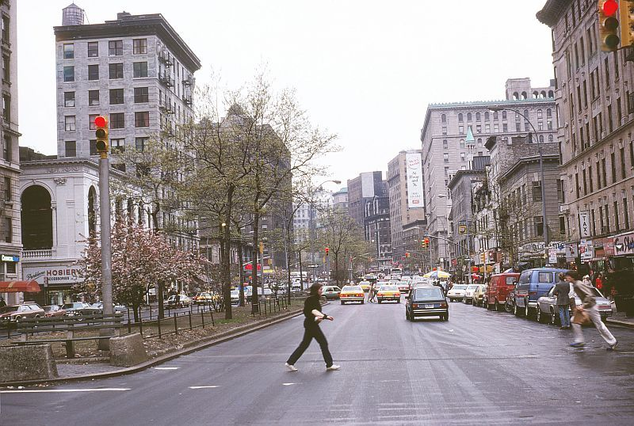
Broadway and 81st, 1980
Tower Records glowing brightly

Museum of Natural History, 1979

All that’s left.
Ah, I remember that place! I had a friend who lived close by. We couldn’t afford to go there much, but every once in a while, after saving our dimes and smoking a lot of good weed, we’d stumble in and buy something delicious.

The aftermath of a night at Studio 54
I pride myself on understanding words put together into phrases and sentences, but I admit I’m at a loss here.

Upper West Side, 1979
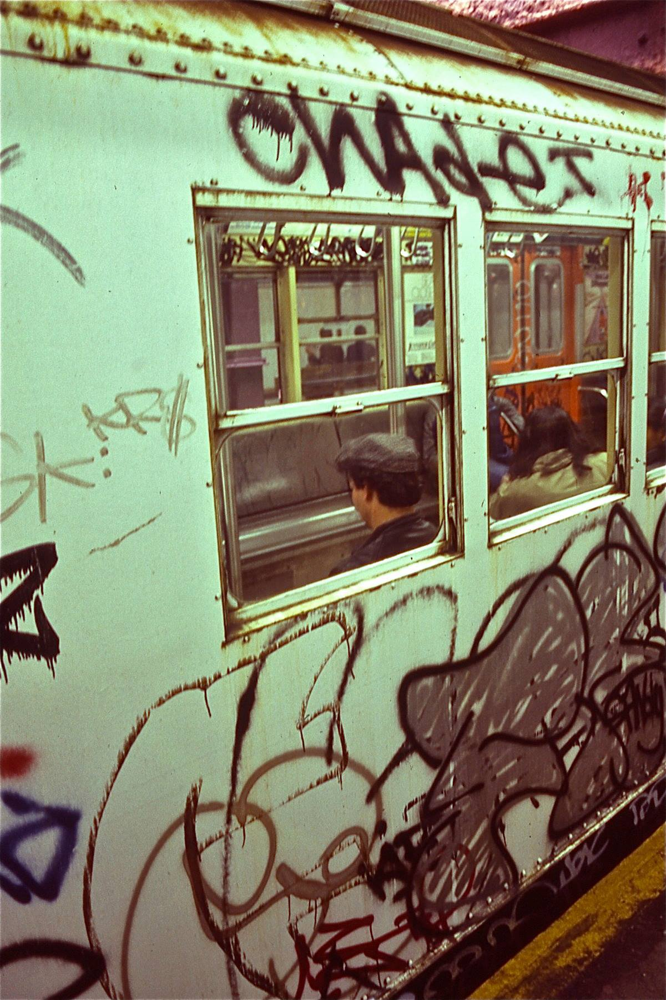
1970s Graffiti
Badlands 1983

Coney Island 1979

Maude Odell, cranking her car, was one of the first female cab driver in NYC c.1923
Photograph: Bettmann/Corbis
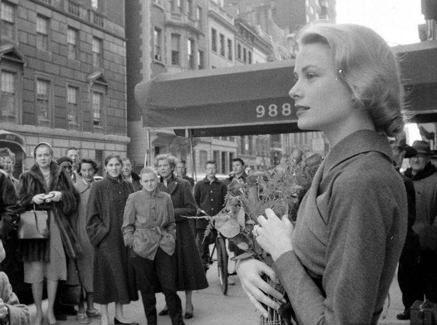
Grace Kelly on 5th Ave, 1956

Pretzels
Queens Boulevard, 1979
W. 11th Street, 1979
Thanks!

Wrecked insides. (One of these couples is happier than the other.)

Hotel Park Plaza on the Upper West Side in the 70s

July 13-14, 1977: The sun rises on the darkened Manhattan skyline during a citywide blackout.
via reddit

Early 70s buses around City Hall

Public Enemy on Bleecker Street, 1987
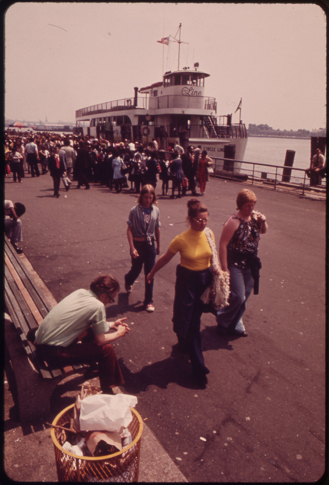
Circle Line, 1973
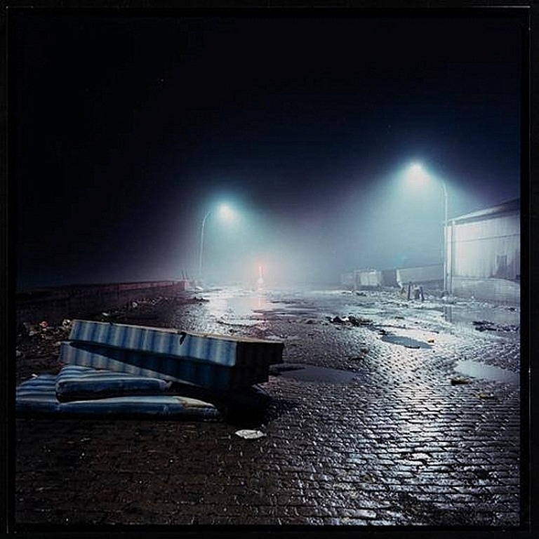
Gansevoort Street in lower Manhattan near the Hudson River during the bad old days of NYC, in this case 1982. Photo by Jan Staller
Running in Central Park, 1975


Henry Chalfant
MAD, (by SEEN), 1980
I Love Zoo York By Ali, 1981
Rasta CIA, 1980
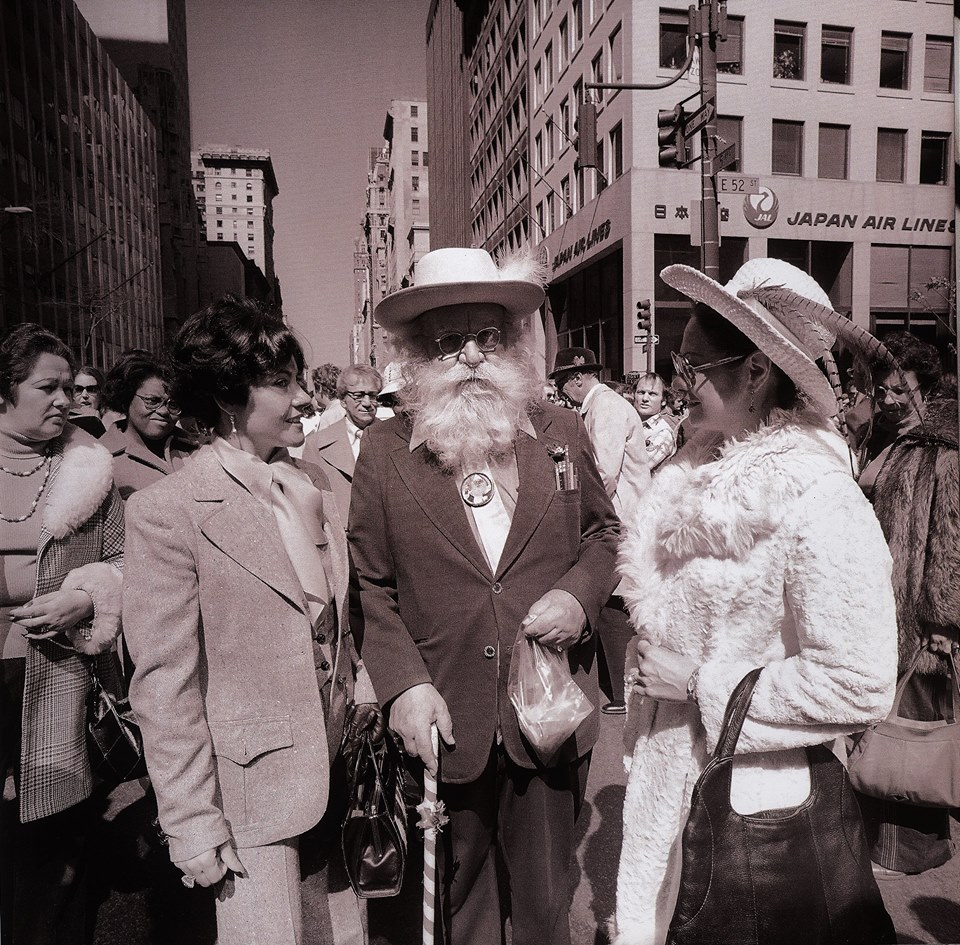
Santa on vacation in NYC
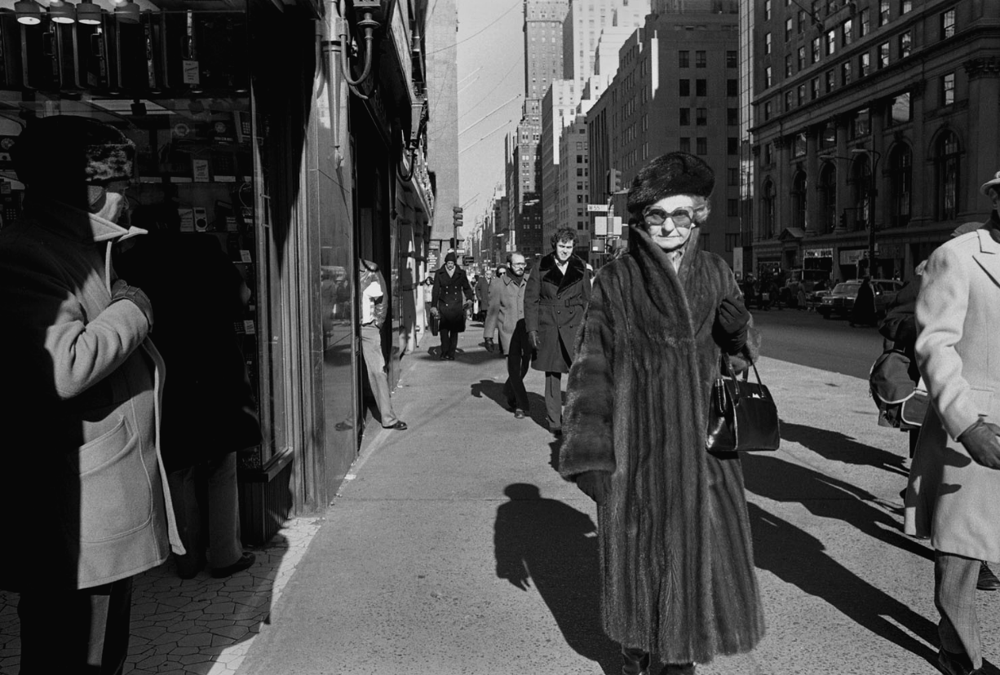
Fur coat, 1970s
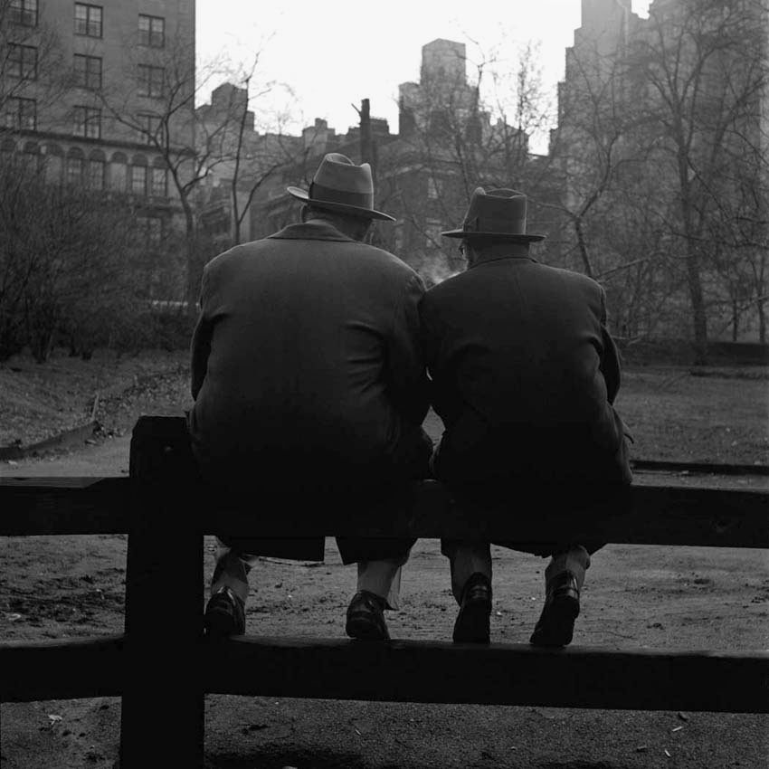
Vivian Maier
Undated, New York

NYC tunnel of love

Brooklyn Bridge, 1979

Yo.

Grand Master Flash and the Furious Five at 123rd Street